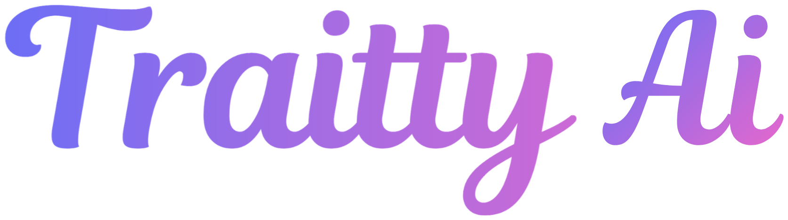

{{ f.title }}
{{ f.body }}
{{ f.detail }}01 / AI AGENT
從一句交辦開始，整理、查詢、開單與跟進接在一起。依你的流程建置，需要確認的地方，由有權人員決定。
{{ f.body }}
{{ f.detail }}可依企業需求規劃建置，按既有系統、資料與權責配置。製造、批發電商與跨語言團隊，都能從一項常用工作開始。
02 / 看得見的工作成果
從提出需求、帶入資料，到確認單據與處理結果。選一項你熟悉的工作，看看操作展示。
03 / WEPREDICT × TRAITTY

AI Agent 整理工作事實；加入工作情境與授權特質，進一步協助你準備溝通、選擇支持方式、談清楚合作安排。
{{ role.purpose }}
{{ role.agent }}
{{ role.trait }}
一般工作支援可以先開始，有需要且已授權時再加入特質。特質協助理解與協作；價格、權限與核准依企業規則，績效以實際成果為依據。
04 / 報價到跟進，一起走一次
客戶要求分批交貨。業務要準備報價，也需要主管協調資源。在同一頁看資料、準備溝通，再確認共同安排。
整合應用示意，使用虛構人物與資料。
私人思考留給本人，共同成果由你確認。分享前先選取、修改並確認對象。團隊收到經確認的工作安排，再接續報價核准、發送與跟進。
05 / 從小處開始，看見實際價值
沿用現有 ERP、進銷存、CRM 與工作工具，先驗證一段流程，再逐步擴展。
{{ s.body }}
從你的現況出發，一起確認適合的方式。
{{ q.a }}
LET’S START WITH YOUR WORK
一則訊息、一份訂單，或一張每週都要整理的報表。
先看 AI 能幫你接手哪一步。
整合應用示意，使用虛構人物與資料。